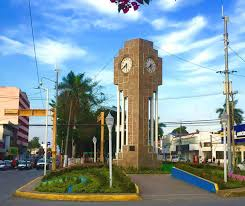

Miguel Avalos
About Me
My name is Miguel Avalos. I was born in Poza Rica, Mexico and I´m still living there. I served a mission in Ciudad Juarez, Mexico. I´m currently working as a specialist sales agent and studying software development. I love to study the gospel, to travel, to cook, learning new things, play the piano and the guitar.
Poza Rica, Mexico
Poza Rica de Hidalgo is a city located in the northern part of the Mexican state of Veracruz. It is the municipal seat of the municipality of Poza Rica de Hidalgo. It is the largest and most populous city in the northern region of the state of Veracruz.